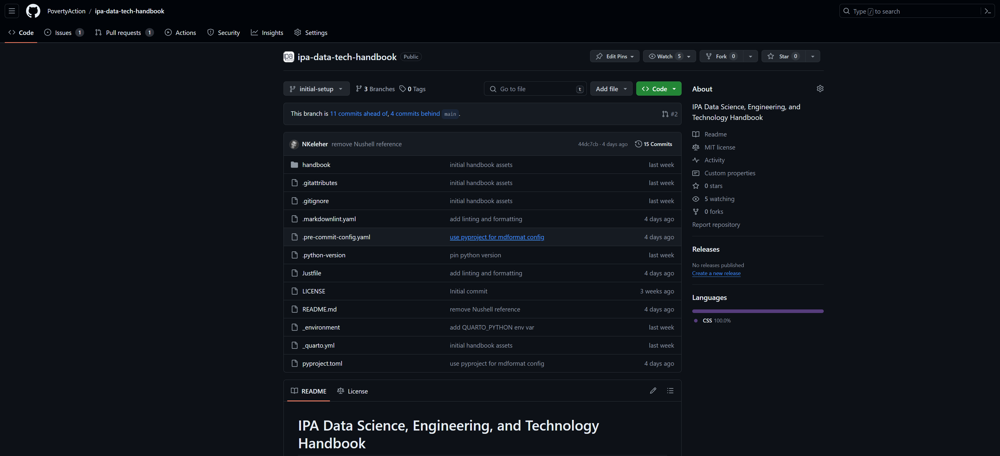

GitHub
What is GitHub?
GitHub is a platform for hosting and collaborating on computer code. It is a place where you can store your code, track changes, and collaborate with others. GitHub is built on top of Git, a version control system that allows you to track changes in your codebase over time. GitHub provides a web-based interface for interacting with Git repositories, as well as a desktop application (GitHub Desktop) and a command-line interface (CLI) for working with Git repositories on your local computer.
How to install GitHub Software?
There are two main options to consider for interacting with GitHub from your local computer:
- GitHub Desktop (Recommended)- GUI for working with Git repositories.
- GitHub CLI - Command-line interface for working with Git repositories. For advanced usage.
If you are new to Git or prefer working with a graphical user interface (GUI), we recommend that you start with GitHub Desktop. The Desktop interface provides a more transparent way of understanding source control and interacting with remote code repositories on GitHub.
GitHub Desktop
| Platform | Commands |
|---|---|
| Windows | winget install GitHub.GithubDesktop |
| MacOS | brew install --cask github |
| Linux | Not available |
GitHub CLI
| Platform | Commands |
|---|---|
| Windows | winget install GitHub.cli |
| MacOS | brew install gh |
| Linux | brew install gh |
Authenticating GitHub
GitHub Desktop
See instructions here for getting started with GitHub Desktop.
In the File menu, select “Options” and then in the “Accounts” options select “Sign in to GitHub.com” and “Continue with browser” to authenticate with your GitHub account.

GitHub CLI
See the GitHub CLI Manual for more information on how to authenticate with GitHub CLI.
To authenticate with GitHub CLI, run the following command in your terminal:
gh auth loginThen walk through the prompts:
What account do you want to log into?
GitHub.comWhat is your preferred protocol for Git operations on this host?
HTTPSAuthenticate Git with your GitHub credentials? (Y/n)
YHow would you like to authenticate GitHub CLI?
Login with a web browser
Using GitHub
Within a GitHub repository, there are four main aspects that you should be familiar with:
- Code: The files and directories that make up your project.
- Issues: A place to discuss and track tasks, bugs, and enhancements for a project.
- Pull Requests: A way to propose changes to a repository and discuss them with others.

In the Code section of a GitHub repository, you can view the files that make up the project codebase. We work with Branches to manage different versions of the codebase. The main branch is the default branch that GitHub uses for the codebase. When you want to make changes to the codebase, you create a new branch from the main branch, make your changes, and then create a Pull Request to merge your changes back into the main branch.
For planning changes to the codebase, you can use Issues to track tasks, bugs, and enhancements. Issues can be assigned to team members, labeled, and linked to Pull Requests. Issues can also be used to discuss changes to the codebase before making them.
Learning Resources
- GitHub Skills provides a lot of relevant resources for learning how to use GitHub. Some good starting points include:
- GitHub Foundations Certificate